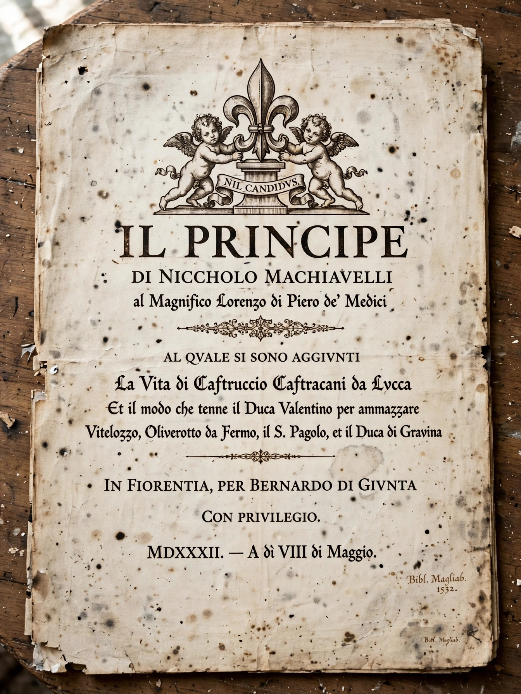

The Prince (Italian: Il Principe) is a 16th-century political treatise written by the Italian diplomat, philosopher and political theorist Niccolò Machiavelli in the form of a guide for a new prince (ruler) and statesman. Written in 1513 and published posthumously in 1532, it is widely regarded as one of the first works of modern political philosophy, in which the author gives pragmatic — critics say amoral — advice on acquiring and holding power.

| The Prince | |
|---|---|
| Author | Niccolò Machiavelli |
| Written | 1513 |
| Published | 1532 (posthumous) |
| Language | Italian |
| Subject | Political science |
| Dedicatee | Lorenzo de' Medici, Duke of Urbino |
The treatise's 26 chapters classify principalities (hereditary, mixed, new and ecclesiastical), survey kinds of armies — condemning mercenaries and praising citizen militias — and analyse the qualities of the successful prince. Its most famous arguments hold that a ruler must learn "how not to be good", that it is safer to be feared than loved if one cannot be both, and that ends tied to the security of the state can justify means condemned by private morality. Cesare Borgia is offered as an exemplar of virtù contending with fortuna.
Machiavelli wrote The Prince after the Medici restoration ended his service to the Florentine republic; he had been imprisoned and tortured on suspicion of conspiracy and hoped the work would win him employment. Condemned by the Church and placed on the Index of Prohibited Books, the treatise gave rise to the adjective "Machiavellian". Interpretations range from a handbook of tyranny to a satire or a covertly republican work; Machiavelli's own republican commitments are on display in the Discourses on Livy.
See also: Machiavellianism · Cesare Borgia · Realpolitik